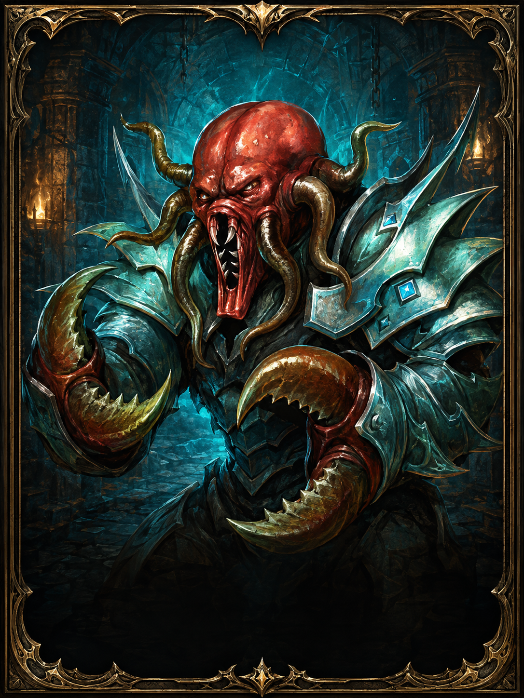

Deniz Midyesi
Flaundinler itibarı için kullanılan temel kaynaklardan biridir.

Flaundinler itibarı, su altı bölgesi, özel görevler, Deniz Midyesi ve Golleyd İncileri üzerinden takip edilen özel itibar gruplarından biridir.
Flaundinler itibarı için temel kaynaklar aşağıdaki gibi takip edilir.
Flaundinler itibarı için kullanılan temel kaynaklardan biridir.

Su altı görevleri ve Flaundinler bağlantılı içeriklerde takip edilir.
Flaundinler itibarı görevler ve kaynak teslimleriyle ilerler.
| Yöntem | Kazanç / Değer | Not |
|---|---|---|
| Sualtı Bilimine Yardım | +5 itibar | Günlük / tekrarlı görev olarak takip edilebilir. |
| Deniz Midyesi | 5 değer | Hesaplayıcıda varsayılan kaynak değeri olarak kullanıldı. |
| Golleyd İncileri | Detay sonra eklenecek | Görev ve teslim bilgileri netleştirilecek. |
| Hayran Aşaması | Özel görev | Ayrı hayran sayfasında tutulacak. |
Madalyon isimlerini sonradan değiştirebilmen için genel aşama adıyla bıraktım.

Başlangıç aralığı
Detay sonra eklenecek
Orta başlangıç
Detay sonra eklenecek
Orta seviye
Detay sonra eklenecek
İleri seviye
Detay sonra eklenecek
Özel aşama
Görev ve kaynak isterMevcut itibar, hedef itibar ve kaynak değerine göre gereken kaynak miktarını hesapla.
Günlük +5 itibar veren görev üzerinden kaç gün gerektiğini hesapla.